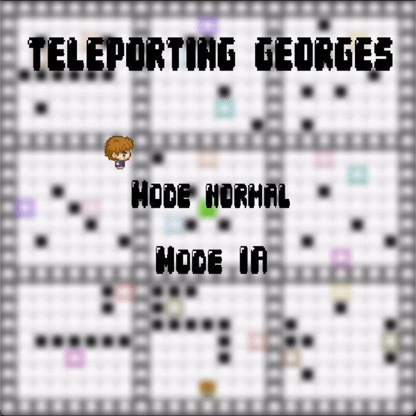
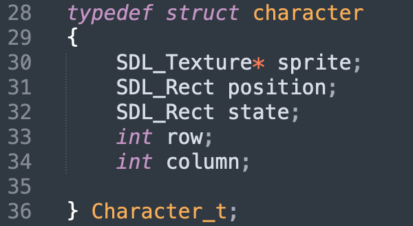
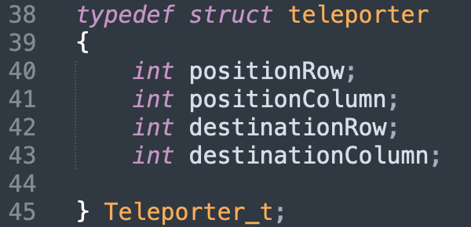
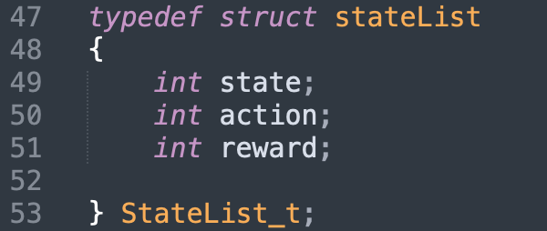

I am
Computer Science Engineer.
Currently Software Engineer at Stryker.
Welcome to my portfolio. Here you can find my experience, skills, and projects.
Currently Software Engineer at Stryker.
Welcome to my portfolio. Here you can find my experience, skills, and projects.
April 2025 - Present
April 2024 - September 2024
April 2023 - August 2023
September 2021 - Present
2019 - 2021

This project consists of creating a game that utilizes reinforcement learning. We developed a game where the entity learns to play and reach a final goal on its own. The concept is similar to a maze.




As explained earlier, we must guide our character from the starting square to the finish square via teleporters. The teleporters are linked in pairs by color. When the character lands on one, an animation transitions them to the corresponding teleporter.


If our character hits a hole, they are reset to the starting position. We use the teleportation animation; essentially, death teleports the player back to the start.

When the character reaches the final square, they perform a small jump and spin.


Our perceptions are based on the character's X and Y positions on the map. We have 529 states depending on 4 directions.
The AI follows the Q-Learning algorithm. Thus, our QTable is a 529x4 matrix.
Our reward system is simple: 1 if the character reaches the finish point, 0 otherwise. To determine the $\xi$ and $\gamma$ parameters, we performed various simulations over 500,000 generations.
The best results were $\xi = 0.8$ and $\gamma = 0.93$.
Action selection follows the E-greedy algorithm. Our epsilon is a geometric sequence with a 0.999 parameter.
For our final model, this epsilon decreases every 150 generations.
Once this modeling is complete, we save the resulting QTable and load it into the main program to move our character
using the experience from previous generations.

Our finish point corresponds to state 265; states 264 and 266 correspond to the squares to the left and right of the final square.
You can clearly see the 1s in the RIGHT and LEFT columns for each state.
Here is a demonstration of the game in AI mode: